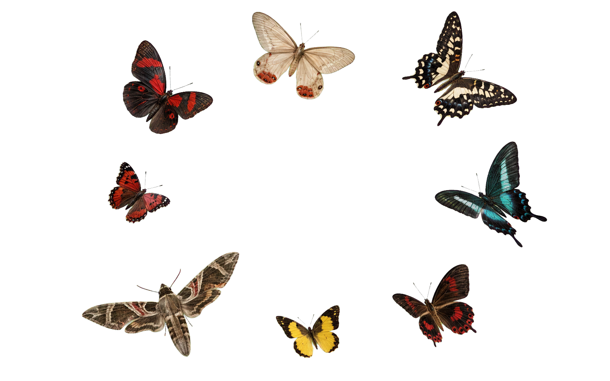
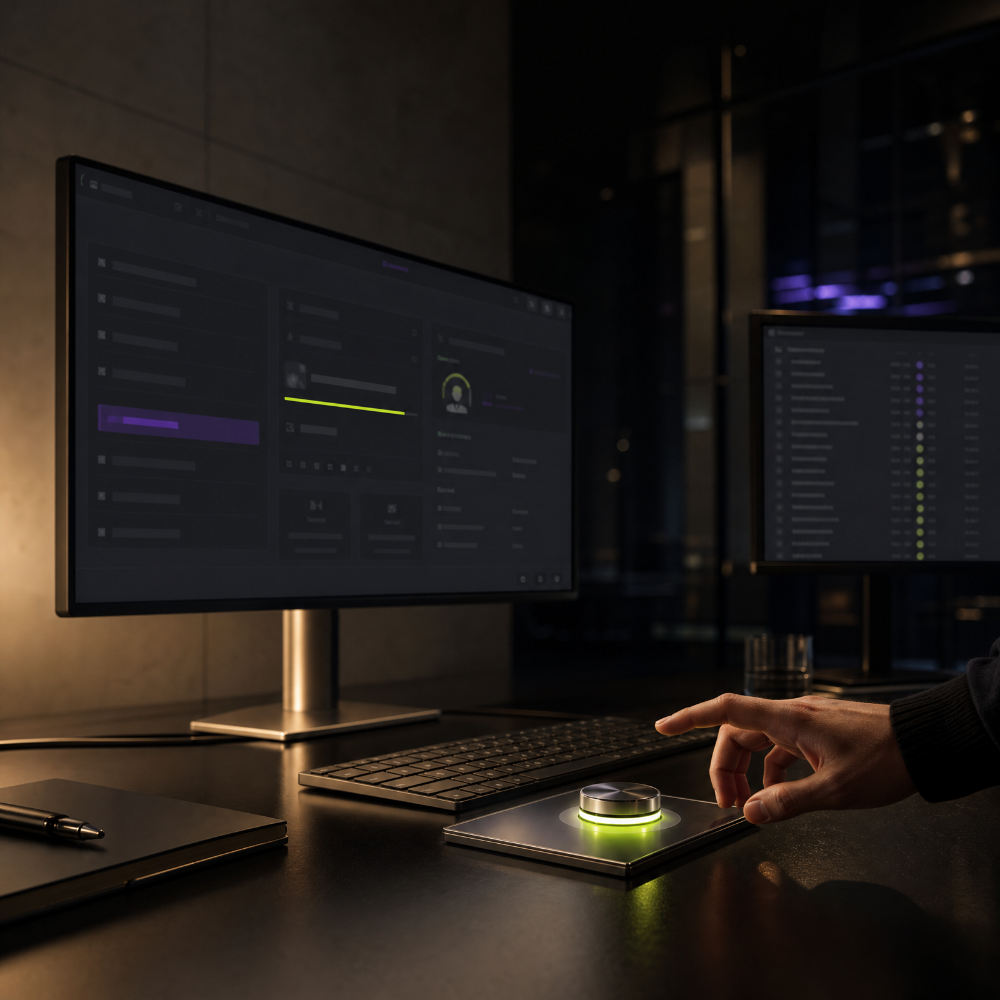
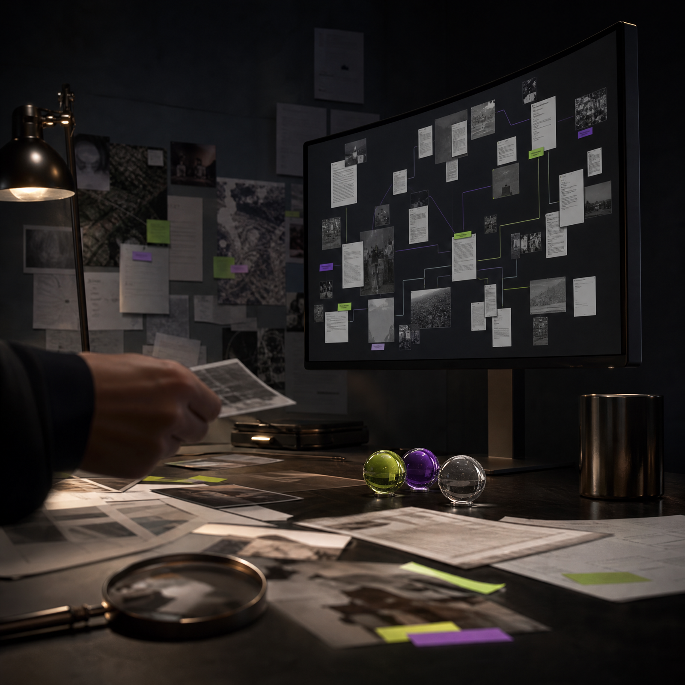
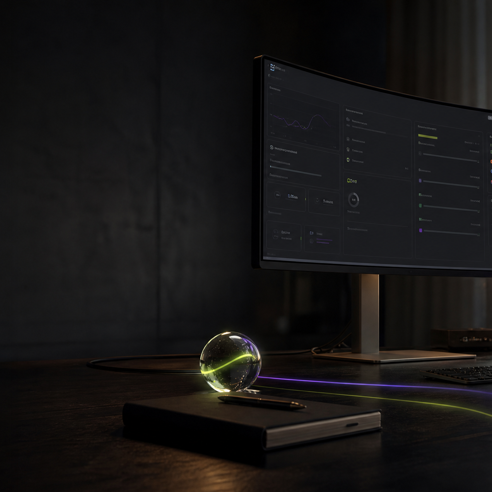

Diseño gráfico + IA
Identidad, dirección de arte, campañas y contenido generado con criterio humano.

Diseñamos sistemas visuales completos, no piezas aisladas. Cada decisión conecta estrategia, estética y tecnología.
Identidad, dirección de arte, campañas y contenido generado con criterio humano.
Interfaces claras, objetos interactivos y movimiento que guía sin sobrecargar.
SEO, ofertas, mensajes y automatización para convertir atención en resultados.
Un proceso visible y colaborativo. Cada etapa produce algo útil que puedes probar antes de avanzar.
Objetivo, audiencia y oportunidad.
Concepto, voz y dirección visual.
Prototipo, identidad y movimiento.
Lanzamiento, medición y evolución.
Meridian es un workspace empresarial con inteligencia artificial. Reúne proyectos, clientes, calendario, conocimiento, equipo y automatización en una interfaz diseñada para convertir contexto en acción.
Tienes 0 tareas pendientes para hoy y 0 eventos en tu calendario. Meridian puede convertir tus prioridades, reuniones y clientes en un plan claro.
Tarea de prueba de Christian Media
El Dashboard reúne tareas, eventos, proyectos, clientes y actividad reciente. La IA interpreta el contexto del workspace y propone el siguiente paso antes de que el trabajo se acumule.
No es una libreta digital: es una arquitectura operativa. Cada área conserva su función, comparte contexto y se conecta con la inteligencia de Meridian.
Tasks, Calendar y Notes convierten planes, reuniones e ideas en trabajo visible y organizado.
CRM y Analytics muestran relaciones, actividad, oportunidades y señales para decidir con evidencia.
Members y Notifications mantienen responsables, cambios y conversaciones dentro del mismo flujo.
Skills, Integraciones, Settings y Billing adaptan Meridian al proceso real de cada organización.
Una capa privada para autenticar, medir y orquestar modelos de OpenAI, Claude, Gemini, OpenRouter y Ollama. El producto puede elegir el proveedor adecuado sin fragmentar la experiencia.
Repositorio privado 🔒
Nuevas funciones, mejoras y cambios importantes explicados con claridad. Las mariposas representan la evolución constante del sistema.
Una selección de experiencias visuales creadas para Meridian: diseño editorial, objetos 3D y sistemas digitales con textura, profundidad y movimiento.



Modelo virtual creada para campañas audiovisuales de moda, tecnología, producto y comunicación de marca.
Dirección editorial y continuidad visual.
Una identidad virtual preparada para campañas.
Productos, APIs y Skills creados por Christian. Cada botón explica su función y abre el recurso correcto.
Backend NestJS con Auth, billing PayPal, AI Gateway para OpenAI, Claude, Gemini, OpenRouter y Ollama, API keys y documentación Swagger.
Ver repositorio ↗Sistema operativo para Claude Code con /goal, /loop, memoria SQLite, Stop Gate, evidencia, verificación y manejo de tokens.
Descargar Skill ↗Repositorio privado de demostración y experimentación operativa de NEXUS LABS.
Abrir acceso ↗Ecosistema de Skills con Pepe, NovaXCo Operator, Christian Marketing, Web Master, UI/UX Pro Max y LLM Council.
Explorar Skills ↗Tu asistente creativo 3D. Puede ayudarte a pensar una campaña, construir una identidad o preparar el brief de un diseño.
Soy diseñador gráfico especializado en IA, creador de Meridian y propietario de Christian Studio. Construyo marcas, sistemas creativos y herramientas que conectan diseño con crecimiento.